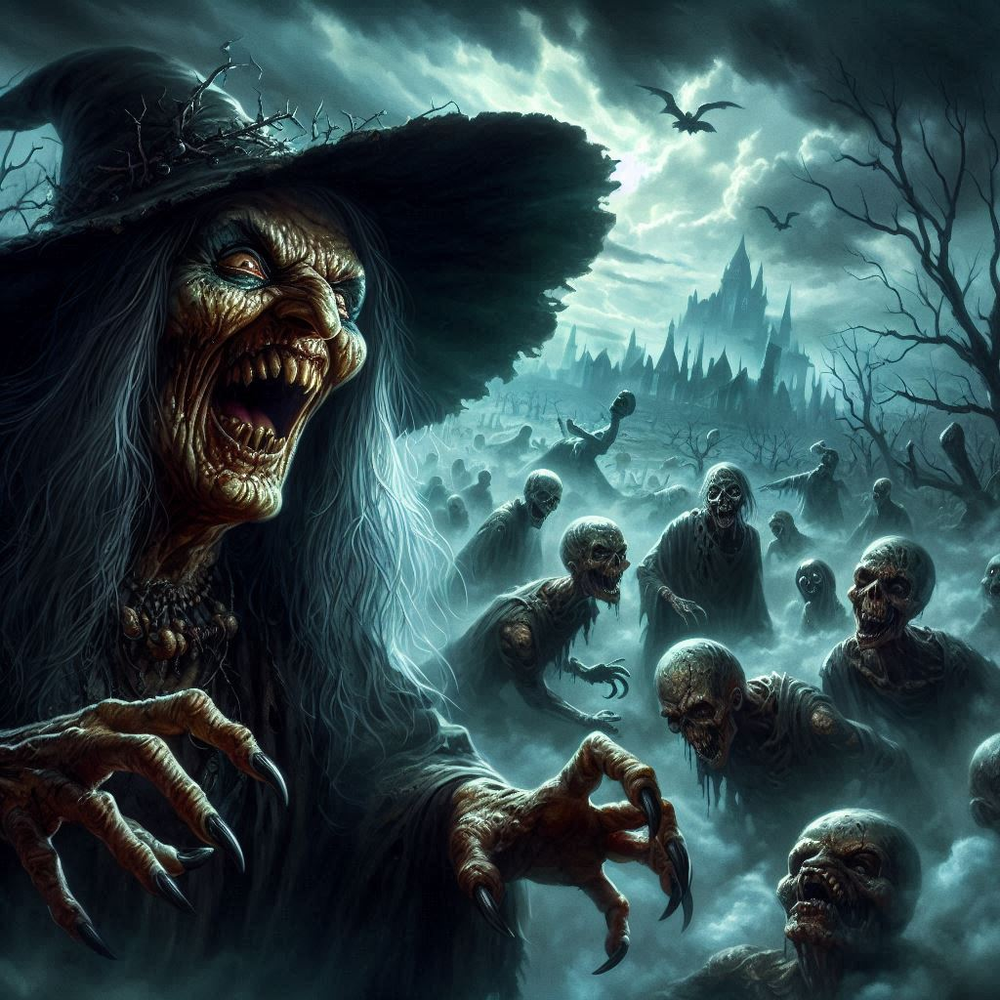
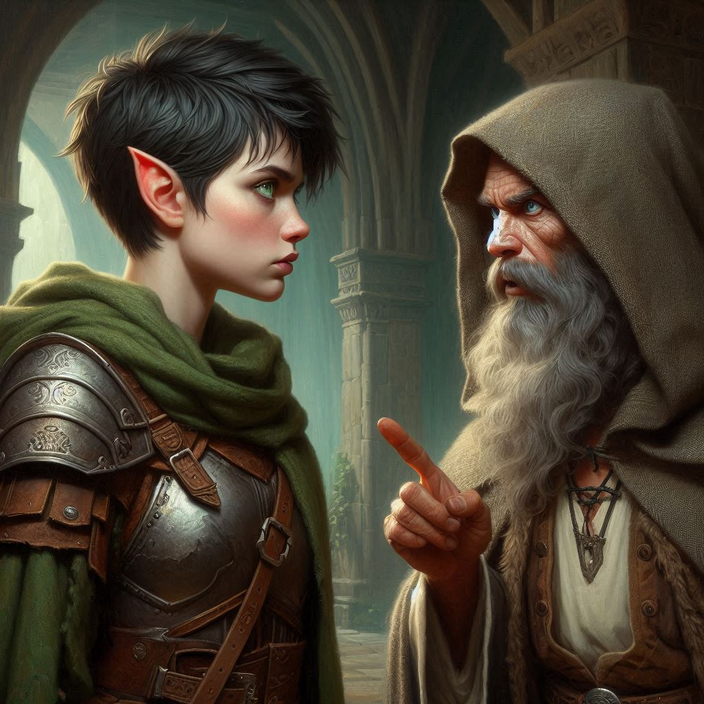
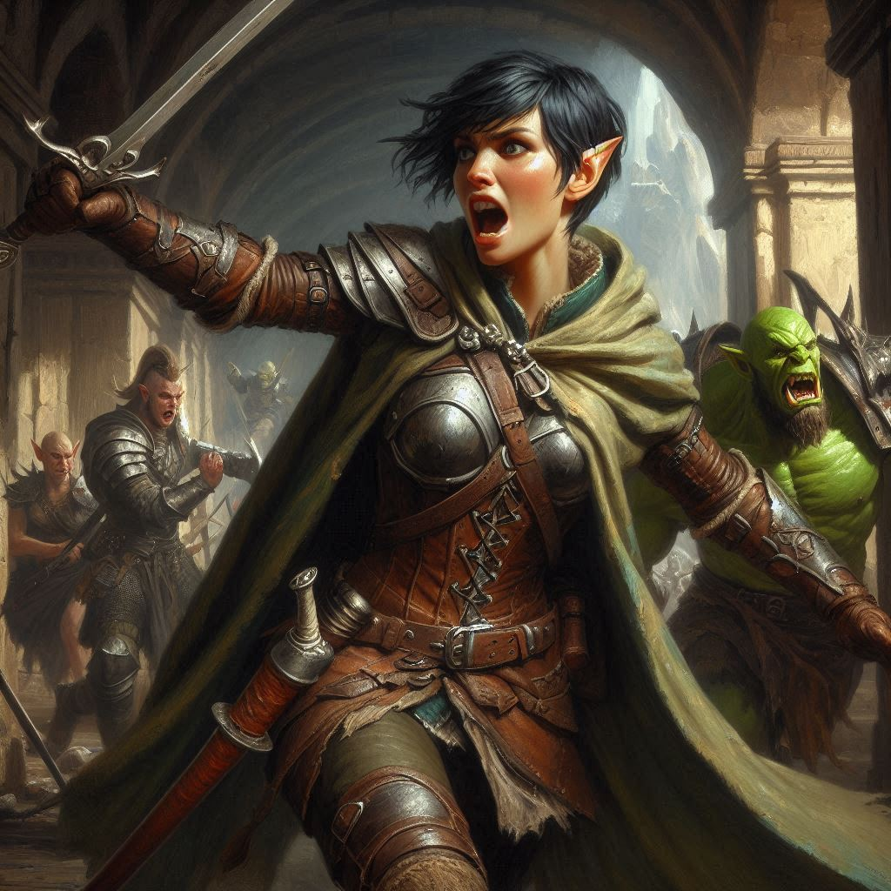

The Sacrifice of Friends
You race through the dark, twisted landscape of the Shadow Realm, your heart pounding in your chest. The hag’s cackling laughter echoes behind you, growing louder with each step. Elias runs beside you, his breath labored, his eyes scanning the bleak horizon for any sign of shelter. The hellhound’s snarls and the heavy thud of its paws striking the rocky ground send waves of terror up your spine. You can feel the heat of its unnatural breath, its jaws snapping just out of reach.
“We need to lose them!” Elias gasps, pointing ahead to a crumbling graveyard shrouded in mist. The ancient headstones and crypts are overgrown with black vines, their surfaces etched with runes you can barely make out in the gloom. “There, Kira!”
You nod, pushing yourself harder, your legs burning as you veer toward the graveyard. The hag shrieks in frustration as you and Elias vault over a low stone wall, disappearing into the shadows of the crypts. You press your back against the cold stone of a mausoleum, struggling to quiet your breath. Elias crouches beside you, his hand clutching the hilt of his sword. His eyes meet yours, filled with both determination and fear.
“We can’t fight her head-on,” he whispers, glancing over the wall. “And that hellhound will track us anywhere we go.”
“We have to try,” you reply, though you know he’s right. The hag’s magic is too powerful, and her dark minion is relentless. A part of you already knows the only way out of this lies in the magic rune stone Elias found in Baider’s shop. It rests heavy in your pouch, glowing faintly with a power you barely understand.
The sound of claws scraping against stone sends a chill down your spine. The hellhound is near, its glowing red eyes peering through the mist, searching for you. Elias tightens his grip on his sword. The hag’s voice cuts through the silence, ancient and full of malice.
“You cannot hide forever, little rangers,” she croons. “Come out and play, or I’ll summon the dead to play for you.”
Your heart sinks as the ground beneath your feet begins to tremble. From the shadows of the crypts, skeletal hands claw their way to the surface. An army of undead warriors rises from the earth, their hollow eyes glowing with the same sickly light as the hag’s magic. The crypts creak and groan as the dead emerge, swords and spears clutched in their bony hands.
“We’re out of time,” Elias says, his voice thick with urgency. “Use the rune, Kira. It’s our only chance.”
You fumble for the rune stone, your fingers trembling. The ancient markings glow brighter as you touch it, pulsing with energy. You look at Elias, your heart torn. “I can’t leave you behind.”
Elias’s expression softens, his usual confidence fading. “I’ll hold them off. You need to go, find Baider and Onyx. Finish this.”
You shake your head, unwilling to let him make this sacrifice. “No, we do this together.”
But Elias is already rising, stepping out from the shadows with his sword drawn. The hellhound charges at him, its fangs bared, but Elias doesn’t flinch. With a quick slash, he drives the creature back, buying you precious seconds.
“Go!” he shouts over his shoulder. “I’ll find another way!”
Tears blur your vision, but you know there’s no other choice. With a heavy heart, you press the rune stone, feeling its magic surge through you. A blinding light envelops you, and in an instant, the graveyard, the hag, and Elias vanish.
You land hard on a cold, damp floor, your breath knocked from your lungs. Gasping, you push yourself up and look around. The air is thick and stifling, the stone walls of the dungeon towering around you. Dim light flickers from torches set into the walls, casting long shadows. You’re alone—but not for long.
“Kira?” A familiar voice calls out from the darkness. Baider.
 "Baider!" You wrap your arms around him. He pats your shoulder gently.“Kira, you made it.” His voice is weak, but there’s a fire in his eyes. “Onyx...he’s here too.”
You turn, and sure enough, in the next cell over, Onyx sits calmly, his eyes closed in meditation. When he opens them, there’s something different—a wisdom, an ancient power. He stands slowly, the chains around his wrists crumbling to dust.
“Kira,” he says, his voice deep and resonant. “There’s no time to explain everything, but you must take Baider and leave. I have a task to finish here.”
“Onyx, we can’t leave you,” you protest. “Not like this.”
He steps forward, placing a hand on your shoulder, his eyes filled with a strange serenity. “I am more than I seem. I am Adonais, the Archon of Light, and my destiny is to stop Yaldaboath. But for me to do that, you must take Baider and flee.”
The weight of his words sinks in, and you realize what he’s asking. The chamber around you hums with power—dark, ancient magic. If Onyx, or rather Adonais, stays behind, it’s to sacrifice himself to banish Yaldaboath and destroy the Chamber of Portals.
You nod, fighting back tears. “I understand.”
Baider looks at you, confusion and concern etched on his face, but he doesn’t protest as you free him from his chains. Together, you make your way toward the exit, casting one last look over your shoulder at Onyx.
He raises his hand, and a blinding light fills the chamber, growing brighter and brighter until it consumes everything. You and Baider barely make it out of the dungeon before the ground shakes violently, the walls cracking and collapsing behind you. The power of the Archon of Light has been unleashed. A troop of dark elves, alerted to the ethereal din of Onyx's magic, begin rushing after you, but they are too late. A shockwave of light consumes them in the tunnels behind you.
You don’t stop running until you’re far from the ruins, the sounds of destruction fading into the distance. Exhausted, you collapse against a tree, Baider at your side. The weight of what you’ve lost settles over you, heavy and suffocating.
But as you stare up at the sky, you know one thing: Onyx’s sacrifice wasn’t in vain. Yaldaboath is banished, the portal is destroyed, and though the cost was great, the world is safe—for now.
You only wish Elias were here to see it.